Lecture2.pdf (หน้า 1-49) · 2603520 Deep Learning
Neural Network Basics: จาก Node เดียวสู่โครงข่าย
บทนี้ตอบคำถามว่า "ทำไมต้องมี Neural Network ทั้งที่มี Logistic Regression แล้ว" แล้วสอนสัญกรณ์ (\(\theta\), layer, node) ที่ใช้ตลอดวิชา ก่อนจบด้วยการคำนวณ Forward Computation ด้วยมือครั้งแรก.
หมายเหตุเรื่องสไลด์
Lecture2.pdf หน้า 50–98 คือสไลด์เดียวกับ Lecture3.pdf ทั้ง 49 หน้า (อาจารย์เปิด deck เดิมซ้ำเป็นการทวน) บทนี้จึงครอบคลุมหน้า 1–49 เท่านั้น ส่วน Cost Function / Backpropagation / Activation อยู่ใน
Lesson 3 (ไม่ซ้ำเนื้อหาสองที่).
1. ทำไมต้อง Neural Network: ปัญหาของ Polynomial Feature
ใน Lesson 1 เราทำ decision boundary ที่ไม่เป็นเส้นตรงด้วยการสร้าง feature เพิ่มด้วยมือ เช่น \(x_1^2,\ x_1x_2\) ใส่เข้าใน logistic regression (จำวงกลมรัศมี 2 ได้ไหม). วิธีนี้ใช้ได้กับ feature 2–3 ตัว แต่จำนวนเทอมที่ต้องสร้างระเบิดเร็วมากเมื่อ feature ตั้งต้นเยอะ.
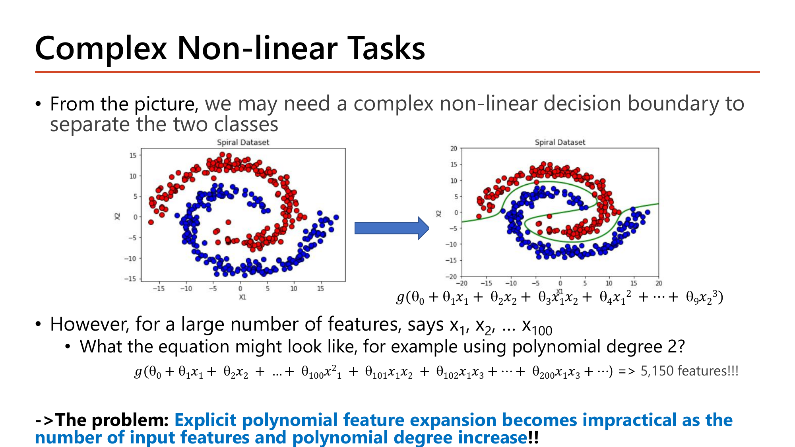
Slide: Complex Non-linear Tasks — polynomial expansion ระเบิดเป็น 5,150 features (Lecture2.pdf, p.2)
คำนวณ: polynomial ดีกรี 2 จาก \(n\) feature มีกี่เทอม (ที่มาของ 5,150 ในสไลด์)
ตัวอย่างสไลด์: \(n = 100\) feature \(x_1,\dots,x_{100}\); นับทุกเทอมที่ดีกรี 1 และ 2 (ไม่นับค่าคงที่)
เทอมดีกรี 1 (ตัวเดี่ยว) \(x_i\)
$$n = 100$$เทอมกำลังสอง \(x_i^2\)
$$n = 100$$เทอมไขว้ \(x_i x_j\) (\(i<j\)) = จำนวนคู่ที่เลือกได้ \(\binom{n}{2}\)
$$\binom{100}{2} = \frac{100 \times 99}{2} = 4950$$รวม
$$100 + 100 + 4950 = 5150$$
สูตรทั่วไป: \(\;2n + \dfrac{n(n-1)}{2}\;\) และนี่คือดีกรี 2 เท่านั้น — เทอมไขว้ \(\binom{n}{2}\) โตแบบ quadratic ตาม \(n\).
ต่อมาสไลด์ให้นับ feature ของภาพจริง (แต่ละพิกเซลคือ 1 feature):
- ภาพ grayscale ขนาด 28×28: \(28 \times 28 = 784\) features (ค่าพิกเซล 0–255)
- ภาพสี RGB (3 channel ต่อพิกเซล): \(784 \times 3 = 2{,}352\) features
ถ้าจะทำ polynomial ดีกรี 2 บนภาพสี: \(2(2352) + \binom{2352}{2} \approx 2.77\) ล้านเทอม — ไม่มีทางทำได้จริง จึงต้องมีวิธีที่ให้โมเดลเรียนรู้ feature ไม่เชิงเส้นเอง ซึ่งก็คือ neural network.
กลไกที่ต้องอธิบายได้
- ทำไมต้องมี
- จำนวนเทอมดีกรี ≤ 2 คือ \(2n + n(n-1)/2\) โตแบบ quadratic ตาม \(n\) การแจกแจงมือทุกเทอมจึงพังเร็ว. NN แก้โดยให้แต่ละ hidden node เรียนรู้ "ผลรวมเชิงเส้น 1 ชุด + nonlinearity" เอง แทนการแจกแจงทุก monomial ล่วงหน้า.
- เปลี่ยนแล้วเกิดอะไร
- ลอง \(n=50\) (ครึ่งหนึ่ง): \(2(50) + \frac{50\cdot49}{2} = 100 + 1225 = 1{,}325\) เทียบ \(n=100\) ที่ 5,150 — จำนวนเทอมไม่ได้ลดครึ่งเดียวแต่ลดเกือบ 4 เท่า (\(5150/1325 \approx 3.9\)) เพราะเทอมไขว้ครองสัดส่วนใหญ่และโตแบบกำลังสอง.
- เชื่อมกับ
- พารามิเตอร์ที่โตเร็วกว่าข้อมูลคือต้นตอของ overfitting (Lesson 1 §10–11) และเหตุผลเดียวกับที่ Lesson 4 §2 เตือนว่าเครือข่ายลึกเสี่ยง overfit สูง.
คำถาม 1Why ANN
ทำไม Explicit Polynomial Feature Expansion ถึง "impractical" เมื่อจำนวน input feature มาก (เช่น 100 features)?
2. ประวัติย่อของ ANN: จาก McCulloch-Pitts สู่ปัญหา XOR
ไอเดียหลัก: นักวิจัยพยายามสร้าง "นิวรอนเทียม" — หน่วยเล็กๆ ที่รับ input หลายตัว รวมแล้วตัดสินใจ "ยิง (1)" หรือ "ไม่ยิง (0)". ประวัติแบ่งเป็น 3 ช่วง:
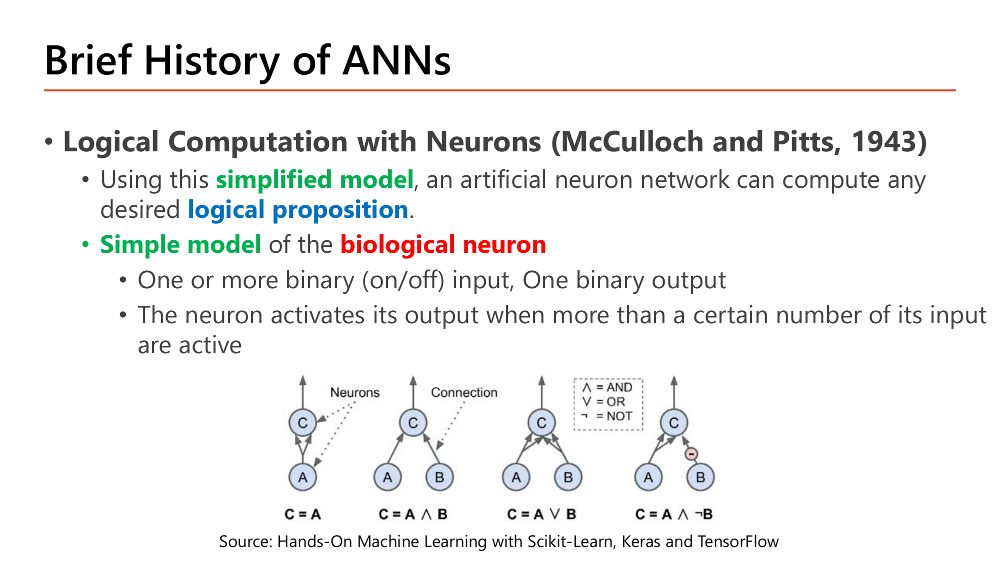
Slide: Logical Computation with Neurons (McCulloch & Pitts, 1943) (Lecture2.pdf, p.8)
1943 McCulloch–Pitts: input เป็น binary (เปิด/ปิด), นิวรอนยิงเมื่อจำนวน input ที่เปิดอยู่ถึงเกณฑ์ที่กำหนด — เรียบง่ายแต่พิสูจน์ได้ว่าสร้าง logic AND, OR, NOT ได้ครบ. ตัวอย่างเช่นนิวรอนที่มี 2 input และเกณฑ์ = 2 ยิงเฉพาะเมื่อ input ทั้งสองเปิด = AND.
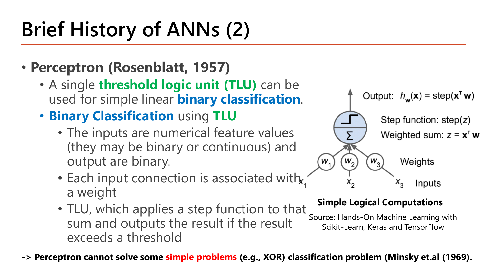
Slide: Perceptron (Rosenblatt, 1957) — Threshold Logic Unit (TLU) เดี่ยว (Lecture2.pdf, p.9)
1957 Perceptron (TLU): ให้ input เป็นตัวเลขจริง คูณ weight แล้วบวก ผ่าน step function (ยิงถ้าผลรวมเกินเกณฑ์):
$$\text{output} = \text{step}\!\left(\sum_j w_j x_j - \text{threshold}\right),\qquad \text{step}(z)=\begin{cases}1 & z \ge 0\\ 0 & z<0\end{cases}$$
1969 Minsky พิสูจน์ว่า TLU ตัวเดียวแก้ XOR ไม่ได้ เพราะ XOR ไม่ใช่ linearly separable — ไม่มีเส้นตรงเส้นเดียวที่แยก \(\{(0,0),(1,1)\}\to0\) ออกจาก \(\{(0,1),(1,0)\}\to1\) (จุดสองสีสลับมุมกัน).
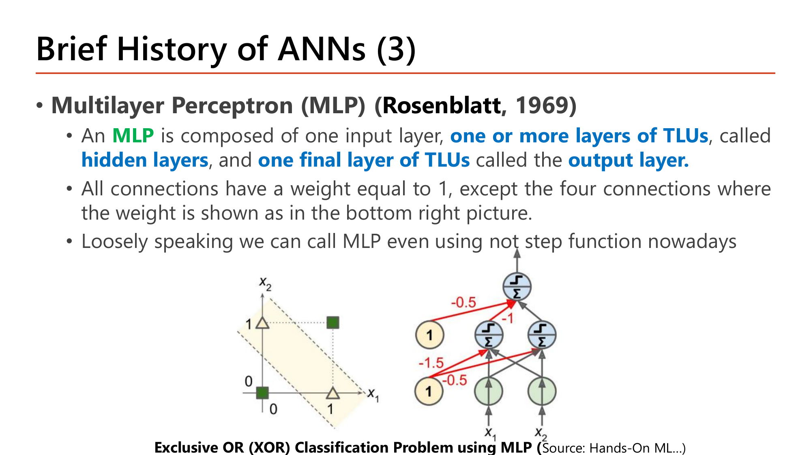
Slide: Multilayer Perceptron (MLP, Rosenblatt 1969) แก้ปัญหา XOR ได้ (Lecture2.pdf, p.10)
คำตอบคือหลาย layer: ใช้ TLU 2 ตัวใน hidden layer แล้วรวมผล. ตามสไลด์: hidden ตัวแรกเป็น "AND-like" \(\text{step}(x_1+x_2-1.5)\), ตัวที่สองเป็น "OR-like" \(\text{step}(x_1+x_2-0.5)\), และ output \(=\text{step}(\text{OR}-\text{AND}-0.5)\).
คำนวณ: MLP ในสไลด์ให้ผล XOR ครบทั้ง 4 กรณี
\((x_1,x_2)=(0,0)\)
$$\text{AND}=\text{step}(0-1.5)=0,\ \text{OR}=\text{step}(0-0.5)=0,\ \text{out}=\text{step}(0-0-0.5)=\text{step}(-0.5)=0$$\((0,1)\)
$$\text{AND}=\text{step}(1-1.5)=0,\ \text{OR}=\text{step}(1-0.5)=1,\ \text{out}=\text{step}(1-0-0.5)=1$$\((1,0)\)
เหมือน (0,1) ⇒ out = 1
\((1,1)\)
$$\text{AND}=\text{step}(2-1.5)=1,\ \text{OR}=\text{step}(2-0.5)=1,\ \text{out}=\text{step}(1-1-0.5)=\text{step}(-0.5)=0$$
ผลลัพธ์ \([0,1,1,0]\) = XOR พอดี — ต่อ TLU 2 layer แก้ปัญหาที่ TLU เดี่ยวแก้ไม่ได้.
กลไกที่ต้องอธิบายได้
- ทำไมต้องมี
- เกณฑ์จริงไม่ใช่ "XOR ยากเป็นพิเศษ" แต่คือ linear separability: TLU เดี่ยวตัดพื้นที่ด้วยเส้นตรง (ไฮเปอร์เพลน) เพียงเส้นเดียว. ถ้าจุดสองคลาสสลับมุมแบบ checkerboard ไม่มีเส้นเดียวแบ่งได้ ไม่ว่าจะปรับ \(\theta\) อย่างไร — ต้องมี hidden layer ตัดพื้นที่หลายส่วนก่อนรวมผล.
- เปลี่ยนแล้วเกิดอะไร
- ลองโจทย์ "majority of 3" (output = 1 ถ้าอินพุตเป็น 1 อย่างน้อย 2 จาก 3): แยกได้ด้วยเส้นเดียว \(\text{step}(x_1+x_2+x_3-1.5)\) เพราะเรียงจุดตาม \(x_1+x_2+x_3\) แล้วตัดที่ 1.5 ไม่มีการสลับแบบ checkerboard — TLU เดี่ยวจึงพอ ไม่ต้องมี hidden layer.
- เชื่อมกับ
- เกณฑ์เดียวกับ decision boundary ใน Lesson 1 (เส้นตรง vs วงกลม): "แยกด้วยเส้นตรงได้ไหม" คือคำถามที่ตัดสินว่าต้องเพิ่ม layer/feature ตลอดวิชา (Lesson 3 จะเปลี่ยนจากการตั้ง \(\theta\) มือเป็นการเรียนรู้จากข้อมูล).
คำถาม 2XOR Problem
เหตุผลเชิงคณิตศาสตร์ที่ Perceptron (TLU เดี่ยวตัวเดียว) ไม่สามารถแก้ปัญหา XOR classification ได้คืออะไร?
3. สัญกรณ์ของ Neural Network: \(\theta\), Layer, Node
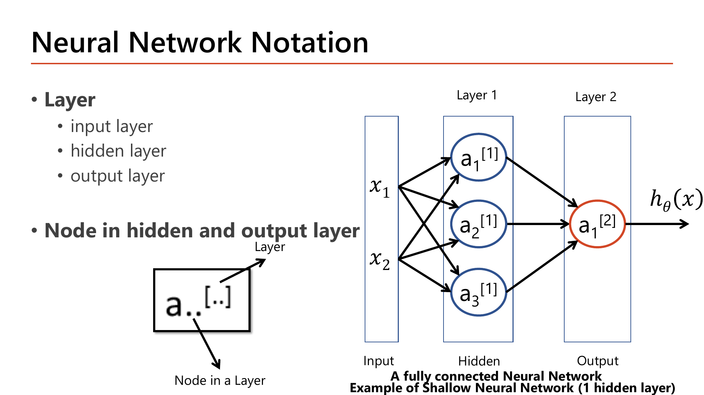
Slide: Neural Network Notation — layer เป็น superscript [l], node เป็น subscript (Lecture2.pdf, p.12)
สัญกรณ์นี้ใช้ตลอดวิชา ต้องแม่น. อ่านทีละส่วน:
| สัญลักษณ์ | อ่านว่า | ตัวอย่าง |
|---|
| \(a_j^{[l]}\) | activation (ค่าออก) ของ node ที่ \(j\) ใน layer ที่ \(l\) (เลขใน \([\ ]\) คือเลข layer ไม่ใช่ยกกำลัง) | \(a_2^{[1]}\) = node 2 ของ layer 1 |
| \(\theta_{ij}^{[l]}\) | weight ของเส้นเชื่อมที่วิ่งเข้า node \(i\) ใน layer \(l\) จาก node \(j\) ใน layer \(l-1\) | \(\theta_{21}^{[1]}\): เข้า node 2 ของ layer 1 จาก \(x_1\) |
| \(x_0 = a_0^{[l]}\) | bias unit ค่าคงที่ \(+1\) เสมอ (ทำหน้าที่เดียวกับ \(\theta_0\) ใน Lesson 1) | \(\theta_{10}^{[1]}\) = weight ของ bias เข้า node 1 |
ลำดับ subscript คือ "ปลายทาง, ต้นทาง" (\(i\) = ปลายทาง, \(j\) = ต้นทาง) — จุดที่คนสับสนบ่อยที่สุด
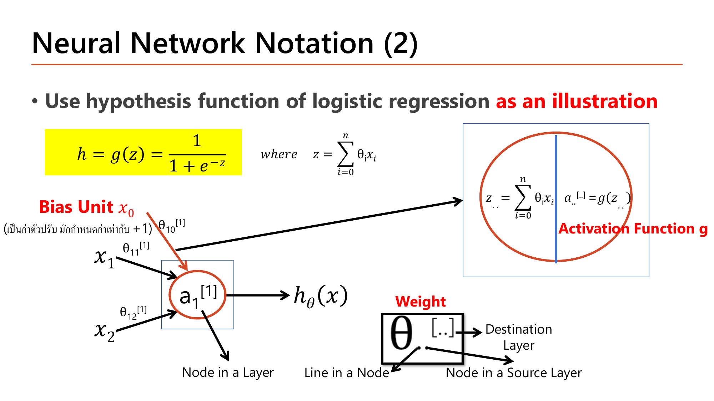
Slide: Bias Unit x₀ และสูตร z, a (Lecture2.pdf, p.13)
สูตรหลักที่ใช้ตลอดวิชา (2 ขั้นเสมอ):
$$z_j^{[l]} = \sum_i \theta_{ji}^{[l]}\, a_i^{[l-1]}\quad(\text{ผลรวมถ่วงน้ำหนักก่อน activation}),\qquad a_j^{[l]} = g\!\left(z_j^{[l]}\right)$$
สังเกตว่า \(\sum_i\) รวมทั้ง bias unit (\(a_0=1\)) ด้วย ดังนั้นจำนวนพารามิเตอร์เข้า 1 node = (จำนวน node ต้นทาง) + 1.
คำนวณ: ขนาดของเมทริกซ์ \(\theta^{[l]}\) และจำนวนพารามิเตอร์
layer ก่อนหน้ามี 4 node (ไม่รวม bias), layer ปัจจุบันมี 2 node
แถว = จำนวน node ปลายทาง
2 แถว (แถวละ 1 node)
คอลัมน์ = จำนวน node ต้นทาง + 1 (bias)
\(4 + 1 = 5\) คอลัมน์
ขนาดเมทริกซ์และจำนวนพารามิเตอร์
$$\theta^{[l]}\in\mathbb{R}^{2\times5},\qquad \text{พารามิเตอร์} = 2\times5 = 10$$
กฎจำง่าย: \(\theta^{[l]}\) มีขนาด (node ปลายทาง) × (node ต้นทาง + 1) — เพราะเวกเตอร์ \(a^{[l-1]}\) ที่ไปคูณมี 5 สมาชิก (รวม bias) การคูณ \((2\times5)(5\times1)\) จึงได้ \(2\times1\) พอดี.
กลไกที่ต้องอธิบายได้
- ทำไมต้องมี
- ลำดับ "ปลายทาง, ต้นทาง" ไม่ใช่แค่ธรรมเนียม: มันทำให้สูตร \(z = \theta\, a\) ตรงกับกฎการคูณ matrix–vector พอดี — แถวของ \(\theta\) คือ index ปลายทาง \(i\), คอลัมน์คือ index ต้นทาง \(j\) จำนวนคอลัมน์จึงตรงกับจำนวนสมาชิกของ \(a\). ถ้าสลับ \(i,j\) มิติจะคูณกันไม่ได้.
- เปลี่ยนแล้วเกิดอะไร
- ถ้าจำสลับจะเผลอเขียน \(\theta\) เป็น \(4\times3\) แทน \(2\times5\) ซึ่งคูณกับ \(a\) (5 สมาชิก) ไม่ได้ ⇒ numpy จะ error ทันทีจาก shape mismatch.
- เชื่อมกับ
- กฎอ่าน index ของ matrix (แถวก่อนคอลัมน์หลัง) ใน §5 และ "dimension of parameters" ที่ Lesson 3 ทำให้เป็นทางการ.
คำถาม 3Notation
ในสัญกรณ์ θ_ij^[l] ตัวเลข i และ j แต่ละตัวหมายถึงอะไร?
4. Logic Gates เป็น Neuron เดี่ยว: AND, OR, NOT
ไอเดีย: 1 node ที่ใช้ sigmoid \(h(x) = g(\theta_0+\theta_1x_1+\theta_2x_2)\) ทำหน้าที่เป็น logic gate ได้ ถ้าเลือก \(\theta\) ให้ผลรวม \(z\) เป็น "บวกมาก" (\(\to1\)) หรือ "ลบมาก" (\(\to0\)) ตรงตามตารางความจริง. ค่า sigmoid ที่ต้องรู้: \(g(-30)\approx0.000\), \(g(-10)=0.0000454\), \(g(10)=0.9999546\), \(g(30)\approx1\).
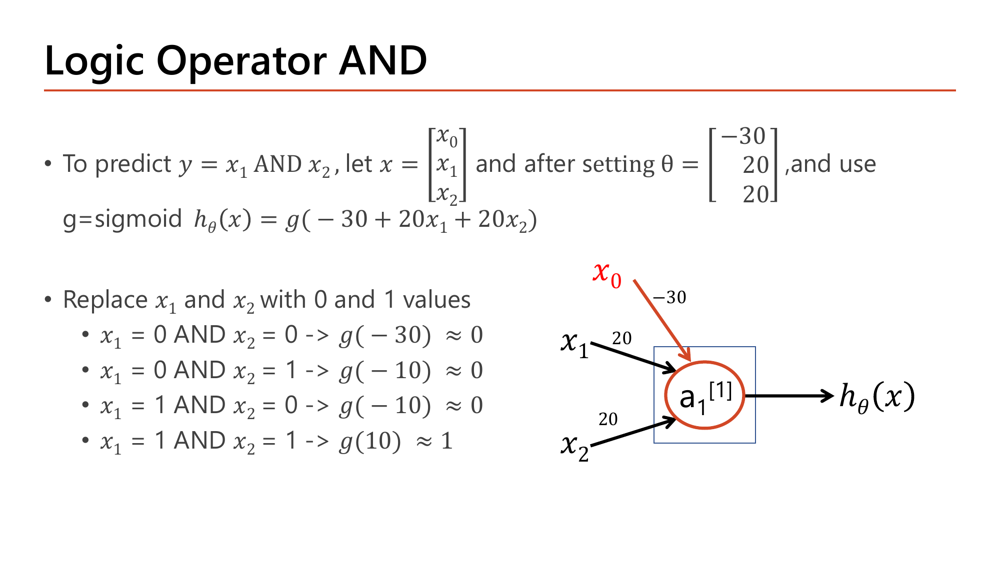
Slide: Logic Operator AND จาก neuron เดียว (Lecture2.pdf, p.16)
AND: \(\theta_0=-30,\ \theta_1=20,\ \theta_2=20\)
\((0,0)\)
$$z = -30 + 0 + 0 = -30 \Rightarrow g(-30)\approx 0$$\((0,1)\)
$$z = -30 + 0 + 20 = -10 \Rightarrow g(-10)\approx 0$$\((1,0)\)
$$z = -30 + 20 + 0 = -10 \Rightarrow g(-10)\approx 0$$\((1,1)\)
$$z = -30 + 20 + 20 = 10 \Rightarrow g(10)\approx 1$$
ให้ 1 เฉพาะเมื่อ input ทั้งสองเป็น 1 = AND. เพราะ bias \(-30\) แรงพอจะกด \(z\) ให้ลบ เว้นแต่ทั้งสอง input ช่วยกันดัน (\(20+20=40>30\)).
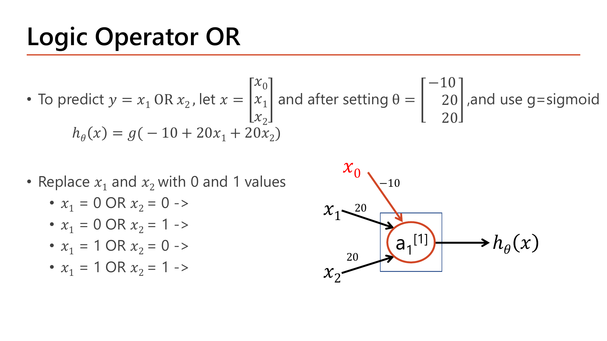
Slide: Logic Operator OR — ช่องคำตอบเว้นให้กรอกเอง (Lecture2.pdf, p.17)
สไลด์เว้นคำตอบของ OR ไว้ให้กรอกเอง — คำนวณเต็ม:
OR: \(\theta_0=-10,\ \theta_1=20,\ \theta_2=20\)
\((0,0)\)
$$z = -10 \Rightarrow g(-10)\approx 0$$\((0,1)\)
$$z = -10 + 20 = 10 \Rightarrow g(10)\approx 1$$\((1,0)\)
$$z = 10 \Rightarrow g(10)\approx 1$$\((1,1)\)
$$z = -10 + 20 + 20 = 30 \Rightarrow g(30)\approx 1$$
ให้ 1 เมื่อมี input อย่างน้อย 1 ตัวเป็น 1 = OR. ต่างจาก AND แค่ bias (\(-30 \to -10\)): bias ยิ่งใกล้ 0 เกณฑ์ยิ่ง "ยิงง่าย".
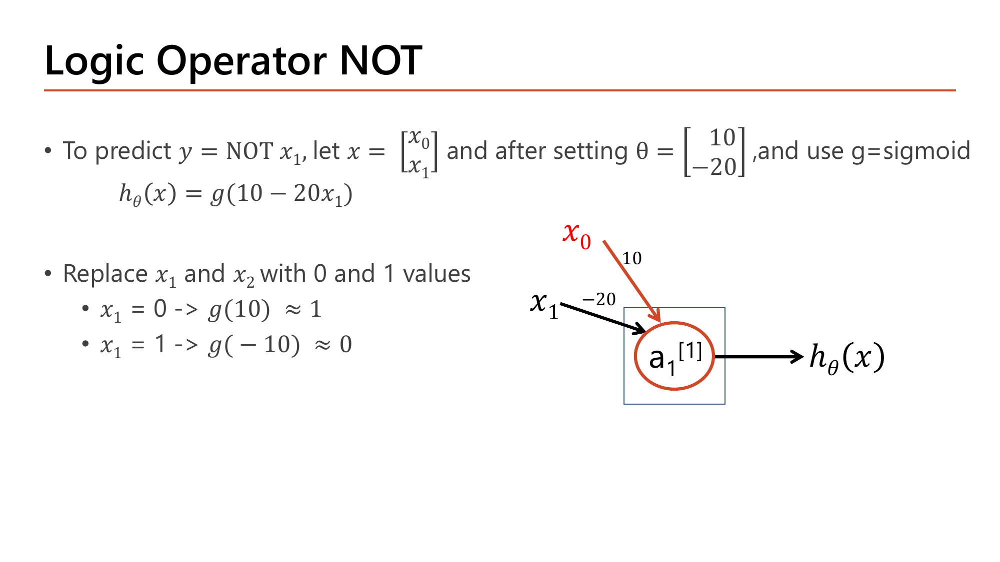
Slide: Logic Operator NOT — ช่องคำตอบเว้นให้กรอกเอง (Lecture2.pdf, p.18)
NOT: \(\theta_0=10,\ \theta_1=-20\) (input เดียว)
\(x_1=0\)
$$z = 10 - 0 = 10 \Rightarrow g(10)\approx 1$$\(x_1=1\)
$$z = 10 - 20 = -10 \Rightarrow g(-10)\approx 0$$
ผลตรงข้ามกับ input พอดี. ที่นี่ weight เป็นลบ (\(-20\)) เพื่อให้ input=1 ดึง \(z\) ลง.
แพทเทิร์นร่วม: ทุก gate คือ neuron เดียวที่เลือก \(\theta\) ให้ "จุดตัด" \(z=0\) ตรงกับเงื่อนไขของ gate — และ Lesson 3 จะเปลี่ยนจากการตั้งมือเป็นเรียน \(\theta\) จากข้อมูลด้วย gradient descent.
กลไกที่ต้องอธิบายได้
- ทำไมต้องมี
- \(\theta\) ต้องมีขนาดใหญ่พอ ไม่ใช่แค่สัดส่วนถูก: sigmoid ต้อง saturate (เข้าใกล้ 0 หรือ 1 ชัดๆ) จึงเป็น gate ที่เด็ดขาด ถ้า \(|z|\) เล็ก sigmoid จะแกว่งใกล้ 0.5.
- เปลี่ยนแล้วเกิดอะไร
- ย่อ \(\theta\) ของ AND ลง 20 เท่า (\([-1.5, 1, 1]\) แทน \([-30, 20, 20]\) ทิศทาง/สัดส่วนเดิมทุกตัว): ที่ \((1,1)\) ได้ \(z = -1.5+1+1 = 0.5\) ⇒ \(g(0.5) = 0.62\) (ไม่ใช่ ≈1 อีกต่อไป) แม้ทิศทางถูกทุกตัว เพราะ \(|z|\) เล็กเกินไปไม่ถึงเขต saturation.
- เชื่อมกับ
- sigmoid ที่ไม่ saturate มีอนุพันธ์ใกล้ 0.25 (สูงสุด) ตรงข้ามกับปัญหา vanishing gradient (Lesson 3 §5, Lesson 5 §1) ที่เกิดจาก saturate มากเกิน — trade-off เดียวกัน: ยิ่งมั่นใจ (saturate) ยิ่งเรียนช้า.
คำถาม 4Logic Gate Neuron
AND gate จาก neuron เดียวใช้ θ₀=−30, θ₁=20, θ₂=20 คำนวณ h(x)=g(θ₀+θ₁x₁+θ₂x₂) ที่ x₁=1, x₂=0 ได้ผลลัพธ์เท่าไหร่ (ประมาณ)?
5. Vectorization & Linear Algebra: เครื่องมือเขียนสูตรให้กระชับ
สูตร NN ทั้งหมดเขียนด้วยเวกเตอร์/เมทริกซ์ (แทนผลรวม \(\Sigma\) ทีละตัว) จึงต้องคำนวณเรื่องพื้นฐานเหล่านี้ได้ทันที — สไลด์ทวนไว้ 3 เรื่อง.
5.1 ขนาดของเวกเตอร์
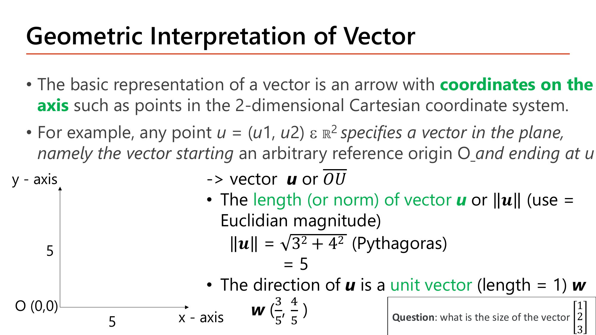
Slide: Geometric Interpretation of Vector — ||u|| ด้วย Pythagoras (Lecture2.pdf, p.24)
ขนาด (length / norm) ของเวกเตอร์ = ระยะจากจุดกำเนิด (ทฤษฎีพีทาโกรัส):
$$\|u\| = \sqrt{u_1^2 + u_2^2 + \dots + u_n^2},\qquad \|u\|^2 = u\cdot u$$
คำนวณ: ตัวอย่างสไลด์ \(u=(3,4)\) และโจทย์ค้างสไลด์ \([1,2,3]\)
ขนาดของ \(u = (3,4)\)
$$\|u\| = \sqrt{3^2+4^2} = \sqrt{25} = 5$$ทิศทาง (unit vector) = หารด้วยขนาด เพื่อให้ยาว 1
$$w = \left(\tfrac35,\ \tfrac45\right),\qquad \|w\| = \sqrt{0.36+0.64} = 1$$โจทย์สไลด์: ขนาดของ \([1,2,3]\)
$$\|[1,2,3]\| = \sqrt{1+4+9} = \sqrt{14} \approx 3.742$$
\(\|\theta\|^2 = \sum\theta_j^2\) ก็คือเทอม regularization ของ Lesson 1 — regularization คือการ "บีบขนาดเวกเตอร์ \(\theta\)" นั่นเอง.
5.2 การอ่าน index ของเมทริกซ์
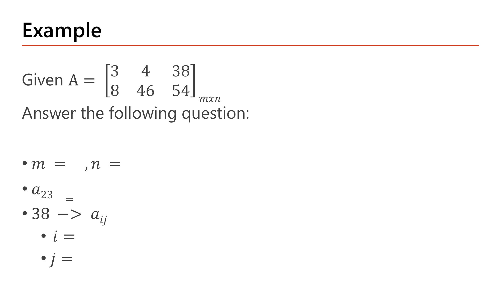
Slide: Matrix Indexing — หา m, n, a₂₃ จากตัวอย่างจริง (Lecture2.pdf, p.28)
คำนวณ: \(A = \begin{bmatrix}3 & 4 & 38\\ 8 & 46 & 54\end{bmatrix}\)
ขนาด: \(m\) = จำนวนแถว, \(n\) = จำนวนคอลัมน์
$$m = 2,\quad n = 3\quad(\text{เขียน } 2\times3)$$\(a_{23}\) = แถวที่ 2 คอลัมน์ที่ 3
$$a_{23} = 54$$เลข 38 อยู่ตำแหน่งใด
แถว 1 คอลัมน์ 3 ⇒ \(a_{13}\) (\(i=1,\ j=3\))
กฎ "แถวก่อน คอลัมน์หลัง" นี้ตรงกับ \(\theta_{ij}\) ที่ \(i\) = ปลายทาง (แถว), \(j\) = ต้นทาง (คอลัมน์).
คำถาม 5Vector Length
เวกเตอร์ [1,2,3] มีขนาด (length/norm) เท่ากับเท่าไหร่ ตามสูตร Euclidean magnitude?
5.3 การคูณเมทริกซ์
กฎมิติ: \((m\times n)\cdot(n\times p) = (m\times p)\) — มิติ "ใน" ต้องเท่ากัน (\(n\)). แต่ละช่องของผลลัพธ์ = (แถวของตัวหน้า) · (คอลัมน์ของตัวหลัง).
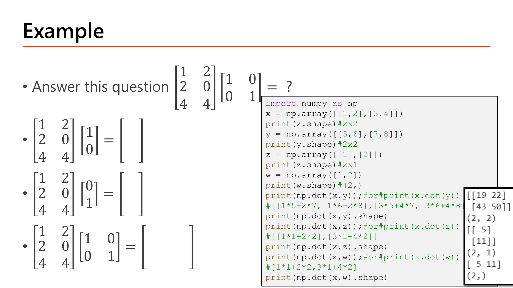
Slide: Matrix Multiplication ด้วย Identity Matrix (Lecture2.pdf, p.34)
คำนวณ: \(A = \begin{bmatrix}1&2\\2&0\\4&4\end{bmatrix}\) (3×2) คูณ \(\begin{bmatrix}1\\0\end{bmatrix}\) แล้วคูณ \(\begin{bmatrix}0\\1\end{bmatrix}\)
เช็คมิติ
\((3\times2)(2\times1) = 3\times1\) ✓
\(A\begin{bmatrix}1\\0\end{bmatrix}\): แต่ละแถว × คอลัมน์
$$\begin{bmatrix}1\cdot1+2\cdot0\\ 2\cdot1+0\cdot0\\ 4\cdot1+4\cdot0\end{bmatrix}=\begin{bmatrix}1\\2\\4\end{bmatrix}$$
= คอลัมน์แรกของ \(A\)
\(A\begin{bmatrix}0\\1\end{bmatrix}\)
$$\begin{bmatrix}1\cdot0+2\cdot1\\ 2\cdot0+0\cdot1\\ 4\cdot0+4\cdot1\end{bmatrix}=\begin{bmatrix}2\\0\\4\end{bmatrix}$$
= คอลัมน์ที่สองของ \(A\)
เรียงสองผลเป็นคอลัมน์ = คูณด้วย \(I_2\) ทั้งก้อน
$$A\,I_2 = A\begin{bmatrix}1&0\\0&1\end{bmatrix}=\begin{bmatrix}1&2\\2&0\\4&4\end{bmatrix}=A$$
\(A\times I = A\) เสมอ เพราะแต่ละคอลัมน์ของ \(I\) คือเวกเตอร์หน่วยที่ "ดึงคอลัมน์เดิมของ \(A\) ออกมาตรงๆ".
กลไกที่ต้องอธิบายได้
- ทำไมต้องมี
- "ผลรวมถ่วงน้ำหนัก" คือนิยามของ dot product พอดี — สูตร NN (\(z=\theta a\), cost, \(\sum\theta_j^2\)) จึงเขียนเป็นเวกเตอร์/เมทริกซ์ได้ล้วนๆ ไม่ต้องเขียน \(\Sigma\) ทีละพจน์.
- เปลี่ยนแล้วเกิดอะไร
- ลองเวกเตอร์ \([3,4,12]\): \(\|[3,4,12]\| = \sqrt{9+16+144} = \sqrt{169} = 13\) ลงตัวพอดี (ต่างจาก \(\sqrt{14}\)) — พีทาโกรัสใช้ได้กับกี่มิติก็ได้ ไม่จำกัดแค่ 2–3 มิติที่วาดได้.
- เชื่อมกับ
- \(\|\theta\|^2\) = regularization term ใน Lesson 1 และ Lesson 3 — ไม่ใช่สูตรใหม่ แค่ภาษาเดียวกับที่เพิ่งเรียน.
คำถาม 6Matrix Indexing
จากเมทริกซ์ A = [[3,4,38],[8,46,54]] (2 แถว, 3 คอลัมน์) องค์ประกอบ a₂₃ มีค่าเท่ากับเท่าไหร่?
คำถาม 7Identity Matrix
ทำไมการคูณเมทริกซ์ A ด้วย Identity Matrix I (A×I) จึงได้ผลลัพธ์เท่ากับ A ทุกครั้งไม่เปลี่ยนแปลง?
6. Vectorized Linear Regression: จาก For Loop สู่ Matrix
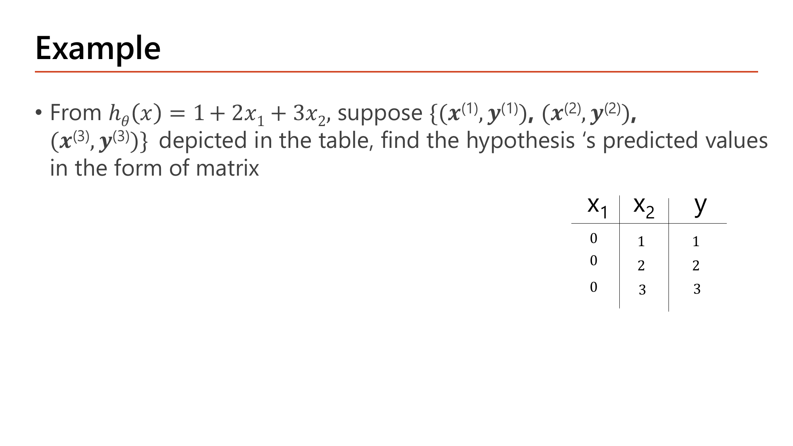
Slide: Vectorization ตัวอย่าง h(x)=1+2x₁+3x₂ กับ 3 training examples (Lecture2.pdf, p.41)
ไอเดีย: แทนที่จะวน loop คำนวณ \(h(x)\) ทีละตัวอย่าง ให้จัดข้อมูลทุกตัวอย่างเป็นเมทริกซ์ \(X\) (1 แถว = 1 ตัวอย่าง, คอลัมน์แรก \(x_0=1\) สำหรับ bias) แล้วคูณ \(X\theta\) ครั้งเดียว:
$$h(X) = X\theta$$
คำนวณ: \(h(x)=1+2x_1+3x_2\) กับ 3 ตัวอย่างที่ \(x_1=0\) และ \(x_2 = 1,2,3\)
\(\theta = \begin{bmatrix}1\\2\\3\end{bmatrix}\), \(X = \begin{bmatrix}1&0&1\\1&0&2\\1&0&3\end{bmatrix}\) (คอลัมน์: \(x_0=1,\ x_1,\ x_2\))
วิธี for loop (ทีละแถว)
$$h_1 = 1+2(0)+3(1) = 4,\quad h_2 = 1+0+3(2) = 7,\quad h_3 = 1+0+3(3) = 10$$วิธี matrix: \(X\theta\) (ขนาด \((3\times3)(3\times1)=3\times1\))
$$\begin{bmatrix}1&0&1\\1&0&2\\1&0&3\end{bmatrix}\begin{bmatrix}1\\2\\3\end{bmatrix}=\begin{bmatrix}1\cdot1+0\cdot2+1\cdot3\\ 1\cdot1+0\cdot2+2\cdot3\\ 1\cdot1+0\cdot2+3\cdot3\end{bmatrix}=\begin{bmatrix}4\\7\\10\end{bmatrix}$$
ได้ \([4,7,10]^\top\) เท่ากับ for loop ทุกตัว แต่ทำในคำสั่งเดียว. (สไลด์หน้า 19 เทียบเวลารัน for loop กับ numpy จริง)
กลไกที่ต้องอธิบายได้
- ทำไมต้องมี
- การคูณเมทริกซ์ไม่ได้ลดจำนวนการคูณ/บวก (ยังเป็น \(O(m\times n)\) เท่าเดิม) แต่เปลี่ยนวิธี "สั่งงาน" ฮาร์ดแวร์: CPU/GPU มีหน่วยคำนวณขนาน (SIMD/BLAS) ที่ทำ dot product หลายตัวพร้อมกัน — Python loop ทีละตัวใช้ความสามารถนี้ไม่ได้.
- เปลี่ยนแล้วเกิดอะไร
- ข้อมูลเพิ่มจาก 3 เป็น 3,000 ตัวอย่าง (×1,000) จำนวนการคำนวณโต ×1,000 เท่ากันทั้งสองวิธี แต่เวลาจริงของ vectorized โตช้ากว่ามาก เพราะเป็นคำสั่งเดียวไม่ใช่ 3,000 คำสั่ง — ต่างกันระหว่าง "ความซับซ้อนเชิงทฤษฎี" กับ "เวลารันจริง".
- เชื่อมกับ
- เหตุผลเดียวกับที่ Lesson 4 §3 เลือก mini-batch size (batch ใหญ่ใช้ประโยชน์เมทริกซ์เต็มที่ แต่ใช้หน่วยความจำมากขึ้น) และ Lesson 3 §3 ที่ backprop ทั้งชุดเขียนเป็นการคูณเมทริกซ์.
7. Shallow Neural Network สร้าง XNOR จาก AND, OR, NOT
รวม gate เดี่ยวจาก §4 เป็น 2 layer สร้าง XNOR (ให้ 1 เมื่อ input เหมือนกัน).
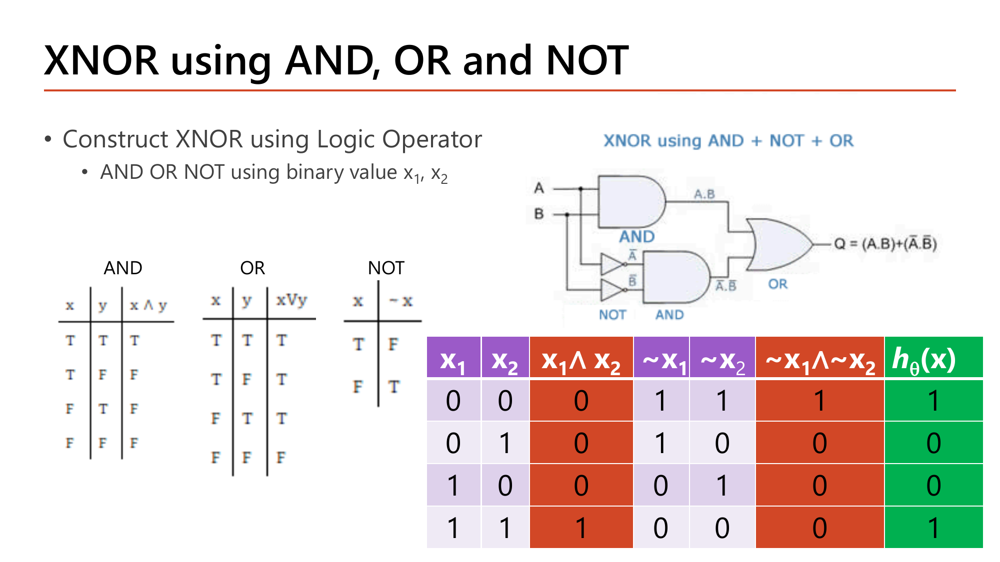
Slide: XNOR using AND, OR, NOT — truth table เต็ม (Lecture2.pdf, p.46)
ไล่ตารางความจริงของสไลด์: ให้ \(A = x_1\wedge x_2\) และ \(B = (\neg x_1)\wedge(\neg x_2)\) แล้ว \(h = A \vee B\):
| \((x_1,x_2)\) | \(A = x_1\wedge x_2\) | \(\neg x_1,\ \neg x_2\) | \(B\) | \(h = A\vee B\) |
|---|
| (0,0) | 0 | 1, 1 | 1 | 1 |
| (0,1) | 0 | 1, 0 | 0 | 0 |
| (1,0) | 0 | 0, 1 | 0 | 0 |
| (1,1) | 1 | 0, 0 | 0 | 1 |
ผล \([1,0,0,1]\) = XNOR พอดี. ทีนี้ลองต่อเป็นโครงข่ายจริงด้วย \(\theta\) จากสไลด์:
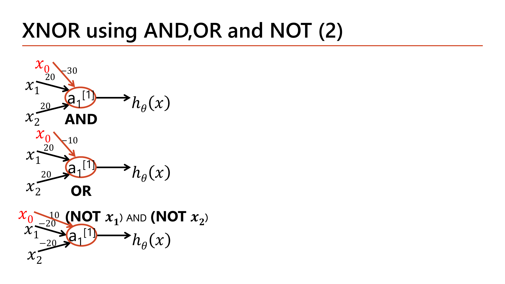
Slide: โครงข่ายที่ต่อ AND, NOT, OR เข้าด้วยกันเป็น XNOR (Lecture2.pdf, p.47)
สไลด์ให้ \(\theta\) ของแต่ละ gate: AND \((-30,20,20)\), OR \((-10,20,20)\), และ \((\text{NOT }x_1)\text{ AND }(\text{NOT }x_2)\) \((10,-20,-20)\). โครงข่าย 2 layer: hidden \(a_1^{[1]}=\) AND, \(a_2^{[1]}=\) \((\neg x_1)\wedge(\neg x_2)\), output = OR ของสองตัวนั้น \(z^{[2]} = -10 + 20a_1^{[1]} + 20a_2^{[1]}\).
คำนวณ: forward ทั้งโครงข่าย XNOR (ใช้ \(g(\pm10)\approx1/0\))
\((0,0)\)
$$a_1^{[1]} = g(-30) \approx 0,\quad a_2^{[1]} = g(10-0-0) = g(10) \approx 1$$
$$z^{[2]} = -10 + 20(0) + 20(1) = 10 \Rightarrow h = g(10) \approx 1$$\((0,1)\)
$$a_1^{[1]} = g(-30+20) = g(-10)\approx0,\quad a_2^{[1]} = g(10-20) = g(-10) \approx 0$$
$$z^{[2]} = -10 \Rightarrow h = g(-10) \approx 0$$\((1,0)\)
เหมือน (0,1) ⇒ \(h\approx0\)
\((1,1)\)
$$a_1^{[1]} = g(-30+40) = g(10)\approx1,\quad a_2^{[1]} = g(10-40) = g(-30)\approx0$$
$$z^{[2]} = -10 + 20 = 10 \Rightarrow h = g(10)\approx1$$
\(h = [1,0,0,1]\) ตรงกับตารางความจริง — เมื่อ 2 hidden node เรียนรู้ "เงื่อนไขคนละแบบ" แล้ว output แค่รวมผล.
กลไกที่ต้องอธิบายได้
- ทำไมต้องมี
- ตัวอย่างนี้พิสูจน์ compositionality: AND และ \((\neg x_1)\wedge(\neg x_2)\) แยกด้วยเส้นตรงได้ทั้งคู่ แต่พอรวมด้วย OR อีก layer ได้ฟังก์ชันที่เส้นตรงเส้นเดียวทำไม่ได้ (XNOR) — แต่ละ hidden node "ตัดพื้นที่คนละมุม" แล้ว output รวมผลที่ตัดแล้ว.
- เปลี่ยนแล้วเกิดอะไร
- สลับ output gate จาก OR เป็น AND (เก็บ hidden เดิม): hidden1 = 1 เฉพาะ \((1,1)\), hidden2 = 1 เฉพาะ \((0,0)\) — สองตัวนี้ไม่เคยเป็น 1 พร้อมกัน ⇒ AND ของทั้งสองได้ 0 เสมอ network กลายเป็น output คงที่ 0 ทั้งที่โครงสร้าง 2 layer เหมือนเดิม.
- เชื่อมกับ
- หลักการ "แต่ละ hidden unit ตัดสินคนละเงื่อนไข แล้ว output รวมผล" คือกลไกเดียวกับที่ Lesson 3–4 ใช้อธิบายว่าเครือข่ายลึกสร้าง boundary ซับซ้อนจากหน่วยเชิงเส้นง่ายๆ ได้ (เช่น Spiral ที่เส้นตรงเดียวแยกไม่ได้).
คำถาม 8XNOR Construction
จาก truth table การสร้าง XNOR ด้วย AND/OR/NOT ที่ (x₁,x₂)=(0,1) ค่า h(x) สุดท้ายเท่ากับเท่าไหร่ และเพราะเหตุใด?
8. Forward Computation: คำนวณมือทั้งโครงข่าย
นี่คือสูตรที่ต้องคำนวณได้ทันทีตลอดวิชา. โครงข่าย: input \(x_1,x_2\) → hidden 3 node → output 1 node.
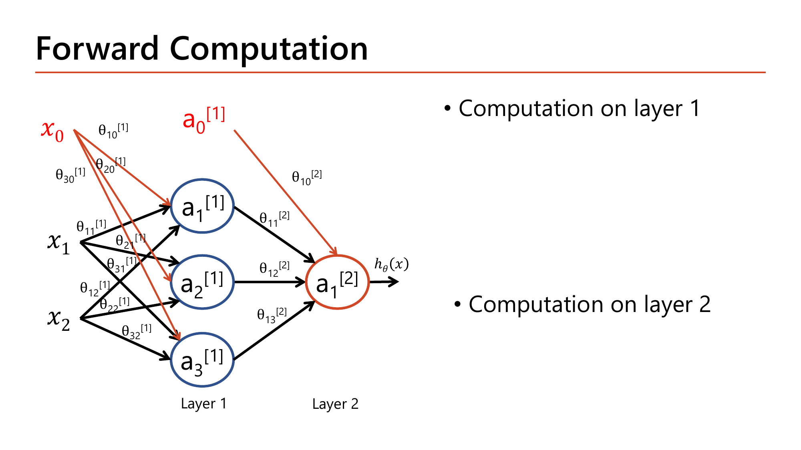
Slide: Forward Computation — สูตรเว้นให้กรอกเอง (Lecture2.pdf, p.48)
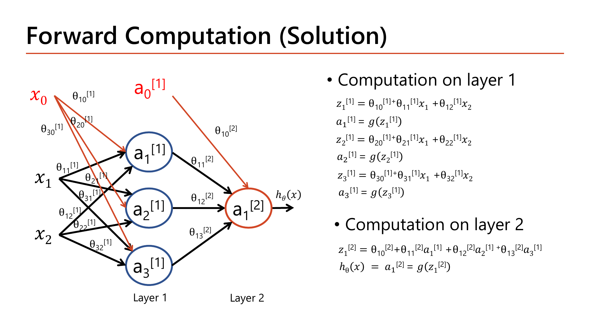
Slide: Forward Computation — เฉลยเต็ม (Lecture2.pdf, p.49)
สูตร 2 ขั้น (จากเฉลยของสไลด์):
$$\begin{aligned}
z_1^{[1]} &= \theta_{10}^{[1]} + \theta_{11}^{[1]}x_1 + \theta_{12}^{[1]}x_2, & a_1^{[1]} &= g(z_1^{[1]})\\
z_2^{[1]} &= \theta_{20}^{[1]} + \theta_{21}^{[1]}x_1 + \theta_{22}^{[1]}x_2, & a_2^{[1]} &= g(z_2^{[1]})\\
z_3^{[1]} &= \theta_{30}^{[1]} + \theta_{31}^{[1]}x_1 + \theta_{32}^{[1]}x_2, & a_3^{[1]} &= g(z_3^{[1]})
\end{aligned}$$
$$z_1^{[2]} = \theta_{10}^{[2]} + \theta_{11}^{[2]}a_1^{[1]} + \theta_{12}^{[2]}a_2^{[1]} + \theta_{13}^{[2]}a_3^{[1]},\qquad h_\theta(x) = a_1^{[2]} = g\!\left(z_1^{[2]}\right)$$
layer 1 ใช้ \(x\) ดิบเป็น input; layer 2 ใช้ activation \(a^{[1]}\) ของ layer 1 เป็น input แทน — รูปแบบ "คูณ weight บวก bias (z) แล้วผ่าน g (a)" ซ้ำทุก layer
เขียนเป็นเมทริกซ์ (layer 1 ทั้ง 3 node พร้อมกัน) — \(\theta^{[1]}\) ขนาด \(3\times3\), \(a^{[0]}=[1, x_1, x_2]^\top\):
$$z^{[1]} = \theta^{[1]}a^{[0]},\quad a^{[1]} = g(z^{[1]}),\qquad z^{[2]} = \theta^{[2]}\begin{bmatrix}1\\ a^{[1]}\end{bmatrix},\quad h = g(z^{[2]})$$
คำนวณตัวอย่างเต็ม (ค่าสมมติ): \(x=(1,2)\)
\(\theta^{[1]}=\begin{bmatrix}0&1&0\\1&-1&1\\-1&0.5&0.5\end{bmatrix}\) (แถว = node 1,2,3; คอลัมน์ = bias, \(x_1\), \(x_2\)) | \(\theta^{[2]}=[-1,\ 1,\ 1,\ -1]\) (bias, \(a_1,a_2,a_3\)) | ใช้ sigmoid
จำนวนพารามิเตอร์
$$\theta^{[1]}:\ 3\times3 = 9,\quad \theta^{[2]}:\ 1\times4 = 4\quad\Rightarrow\quad 13\text{ ตัว}$$layer 1: หา \(z^{[1]}\) ทีละ node
$$\begin{aligned}
z_1^{[1]} &= 0 + 1(1) + 0(2) = 1\\
z_2^{[1]} &= 1 - 1(1) + 1(2) = 2\\
z_3^{[1]} &= -1 + 0.5(1) + 0.5(2) = 0.5
\end{aligned}$$layer 1: ผ่าน sigmoid
$$a^{[1]} = \big[g(1),\ g(2),\ g(0.5)\big] = [0.731,\ 0.881,\ 0.622]$$layer 2: \(z^{[2]}\) จาก \(a^{[1]}\) (ไม่ใช่ \(x\))
$$z^{[2]} = -1 + 1(0.731) + 1(0.881) - 1(0.622) = -0.011$$output
$$h_\theta(x) = g(-0.011) = 0.497$$
\(h_\theta(x) \approx 0.497\) ⇒ ทำนาย \(y=0\) (ยังไม่ถึง 0.5 นิดเดียว). ขั้นตอนทั้งหมดคือ "คูณ + บวก" แล้ว "sigmoid" สลับกัน 2 รอบ.
กลไกที่ต้องอธิบายได้
- ทำไมต้องมี
- สูตรแบ่งเป็น "\(z\) แล้ว \(a\)" (ไม่คำนวณรวดเดียว) เพราะ backpropagation (Lesson 3) ต้องแยกอนุพันธ์เป็น 2 ขั้นตามลำดับนี้: \(\partial a/\partial z = g'\) และ \(\partial z/\partial\theta = a^{[l-1]}\) — ถ้าไม่แยกจะไม่มี "จุดต่อ" ให้ chain rule ไล่ทีละขั้น.
- เปลี่ยนแล้วเกิดอะไร
- ถ้า hidden layer มี 5 node แทน 3: \(z_1^{[2]}\) เปลี่ยนจาก 4 พจน์เป็น 6 พจน์ (\(\theta_{10}+\sum_{k=1}^{5}\theta_{1k}a_k\)) และ \(\theta^{[2]}\) เปลี่ยนจาก \(1\times4\) เป็น \(1\times6\) ตามกฎ (ปลายทาง)×(ต้นทาง+1); \(\theta^{[1]}\) จาก \(3\times3\) เป็น \(5\times3\) ⇒ พารามิเตอร์รวม \(15+6=21\) (จาก 13).
- เชื่อมกับ
- "z แล้ว a" คือ 2 ใน 4 เทอมของสูตร backprop ที่ Lesson 3 พิสูจน์ (\(g'\) จาก \(a=g(z)\), \(a^{[l-1]}\) จาก \(z=\theta a\)) และขยายเป็น \(L\) layer ใน Lesson 4.
คำถาม 9Forward Computation
ในการคำนวณ z₁⁽²⁾ (ค่า z ของ output node ในโครงข่าย 2 layer ที่มี hidden layer 3 node) ตัวแปรที่ถูกนำมาคูณกับ θ นั้นคืออะไร?
คำถาม 10Vectorization
เหตุผลหลักที่การคำนวณ cost function แบบ vectorized (h=np.dot(X,theta)) เร็วกว่าการวน for loop ทีละ training example คืออะไร?
ชัยชนะของบทเรียนนี้
คุณควรอธิบายได้ว่าทำไมต้องมี Neural Network (นับเทอม polynomial ได้: \(2n+n(n-1)/2\)), อ่านสัญกรณ์ \(\theta_{ij}^{[l]}\), \(a_j^{[l]}\) และขนาด \(\theta^{[l]}\) ได้ถูก, คำนวณ logic gate จาก neuron เดียวได้ (AND/OR/NOT) และเข้าใจว่าทำไม XOR/XNOR ต้อง 2 layer, คำนวณเมทริกซ์/เวกเตอร์พื้นฐานได้ และทำ Forward Computation เต็มโครงข่ายมือได้ตั้งแต่ input จนถึง \(h_\theta(x)\) — สูตรเดียวกับที่ Lesson 3 จะสอน backpropagation ย้อนกลับ.
ภาคผนวก: Slide หน้า 1-49 ของ Lecture2.pdf — เช็คว่าอ่านครบ
ไล่ทุกหน้าที่เป็นเนื้อหาของ Lesson นี้ (หน้า 1-49) — หน้า 50-98 ของ Lecture2.pdf คือ Lecture3.pdf ทั้งหมด (สไลด์เดียวกันเป๊ะ) ไปดูภาคผนวกที่ Lesson 3 แทน.
| หน้า | เนื้อหา | สถานะ |
|---|
| 1 | ปก Part 1-Neural Network | etc — บริบทวิชา |
| 2 | Complex Non-linear Tasks — polynomial blowup 5,150 features | ✓ หัวข้อ 1 (มีรูป) |
| 3 | Computer Vision Tasks — จำนวน feature ของภาพ 28×28 | ✓ หัวข้อ 1 (คำนวณในเนื้อหา) |
| 4–6 | Artificial Neural Networks, From Biological to Artificial NN, Neural Network Intuition | etc — เกริ่นแนวคิดพื้นฐาน (ไม่มีคำนวณใหม่) |
| 7 | Why Can Neural Networks Model Complex Patterns? — รวม boundary ง่ายเป็นซับซ้อน | etc — แนวคิดเกริ่นก่อนหัวข้อ 2 |
| 8 | Brief History of ANNs — McCulloch & Pitts (1943) | ✓ หัวข้อ 2 (มีรูป) |
| 9 | Brief History of ANNs (2) — Perceptron/TLU (1957) | ✓ หัวข้อ 2 (มีรูป) |
| 10 | Brief History of ANNs (3) — MLP แก้ XOR (1969) | ✓ หัวข้อ 2 (มีรูป, คำนวณเต็ม) |
| 11 | Neural Network Structure — input/hidden/output layer นิยาม | etc — นิยามคำศัพท์ก่อนหัวข้อ 3 |
| 12 | Neural Network Notation — layer superscript, node subscript | ✓ หัวข้อ 3 (มีรูป) |
| 13 | Neural Network Notation (2) — bias unit, z, a, g | ✓ หัวข้อ 3 (มีรูป) |
| 14 | Small Neural Network — linear/logistic regression เป็น NN 1 node | etc — เชื่อมกับ Lesson 1 (ไม่มีคำนวณใหม่) |
| 15 | Example on Computational Logic — เกริ่นตรรกศาสตร์ | etc — เกริ่นก่อนหัวข้อ 4 |
| 16 | Logic Operator AND | ✓ หัวข้อ 4 (มีรูป) |
| 17 | Logic Operator OR | ✓ หัวข้อ 4 (มีรูป) |
| 18 | Logic Operator NOT | ✓ หัวข้อ 4 (มีรูป) |
| 19 | Vectorization — for loop vs numpy เวลารัน | etc — เกริ่นก่อนหัวข้อ 5 |
| 20–23 | Linear Algebra นิยาม, Vector, Vector Operations, Vector Operations Properties | etc — นิยาม/สมบัติพื้นฐานของเวกเตอร์ |
| 24 | Geometric Interpretation of Vector — ||u|| ด้วย Pythagoras | ✓ หัวข้อ 5 (มีรูป) |
| 25 | Exercise — Euclidean distance ระหว่างเวกเตอร์ | etc — โจทย์ฝึกเสริม นอกขอบเขต quiz หลัก |
| 26 | The Dot Product — นิยามและตัวอย่าง numpy | etc — นิยาม dot product (ใช้ต่อในหัวข้อ 5) |
| 27 | Matrix — นิยามและมิติ | etc — นิยามก่อนตัวอย่างหน้า 28 |
| 28 | Example — matrix indexing m, n, a₂₃ | ✓ หัวข้อ 5 (มีรูป) |
| 29–30 | Matrix Operations (Addition/Subtraction), Matrix Multiplication (Scalar) | etc — กฎการคำนวณพื้นฐาน |
| 31 | Matrix Multiplication — matrix-vector นิยาม | etc — นิยามก่อนตัวอย่างหน้า 34 |
| 32 | Example — matrix-vector multiplication ตัวอย่างสั้น | etc — ตัวอย่างคล้ายหน้า 34 ที่อธิบายละเอียดแล้ว |
| 33 | Matrix Multiplication — matrix-matrix นิยาม | etc — นิยามก่อนตัวอย่างหน้า 34 |
| 34 | Example — matrix × identity matrix | ✓ หัวข้อ 5 (มีรูป) |
| 35 | Multiplication Properties — commutative ไม่จริงสำหรับ matrix | etc — สมบัติเสริม |
| 36 | Matrix Transpose — นิยามและตัวอย่าง numpy | etc — นิยาม (ไม่มีคำนวณใหม่ที่ต้องแยก quiz) |
| 37 | Identity Matrix — นิยาม AI=IA=A | ✓ หัวข้อ 5 (พิสูจน์ด้วยตัวอย่างหน้า 34) |
| 38–40 | Vectorization for Linear Regression — hypothesis function เป็น matrix form | ✓ หัวข้อ 6 (เกริ่นก่อนตัวอย่างหน้า 41) |
| 41 | Example — vectorization h(x)=1+2x₁+3x₂ กับ 3 examples | ✓ หัวข้อ 6 (มีรูป, คำนวณเต็ม) |
| 42–43 | From For Loop to Vectorization, Cost Function (For Loop vs Vectorization code) | ✓ หัวข้อ 6 (อธิบายในเนื้อหา) |
| 44 | Exercise — เขียน numpy L1/L2 loss เอง | etc — โจทย์ฝึกเขียนโค้ด นอกขอบเขต quiz ทฤษฎี |
| 45 | Shallow Neural Network — diagram เต็มพร้อม θ ทุกเส้น | etc — เกริ่นก่อนหัวข้อ 7 |
| 46 | XNOR using AND, OR, NOT — truth table | ✓ หัวข้อ 7 (มีรูป) |
| 47 | XNOR using AND, OR, NOT (2) — โครงข่ายที่ต่อกัน | ✓ หัวข้อ 7 (มีรูป) |
| 48 | Forward Computation — สูตรเว้นให้กรอก | ✓ หัวข้อ 8 (มีรูป) |
| 49 | Forward Computation (Solution) — เฉลยเต็ม | ✓ หัวข้อ 8 (มีรูป, คำนวณเต็ม) |
สงสัยตรงไหน ถามได้เลยในแชท — ผมเป็นผู้สอนของคุณ ถามซ้ำได้ ถามลึกได้ ไม่ต้องเกรงใจ.